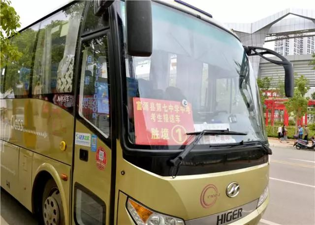

2019年6月28日至30日，在一年一度的中考季（即初三学业水平考试）中，富源县的10738名考生在全县10余个单位部门的精心组织、部门联动、密切协作下，顺利地在富源县第一中学、富源县胜境中学、富源县第八中学、富源县第六中学、富源县第七中学5个考点参加中考。
2019年富源县初三学业水平考试共有10738名考生，全部收缩在县城参加考试后设置1个考区5个考点358个考场，其中县第一中学考点75个考场、县胜境中学考点88个考场、县第六中学考点80个考场、县第八中学考点80个考场、县第七中学考点35个考场。
在中考期间，富源县教育体育局、县公安局等10余个单位部门综合统筹，积极作为，协同配合，全力为全县10738名中考考生保驾护航。考场外的考生家长们、社会各界人士等积极配合、全力支持、主动服务，确保了全县10738名中考考生顺利参加各个科目的考试选拔。
